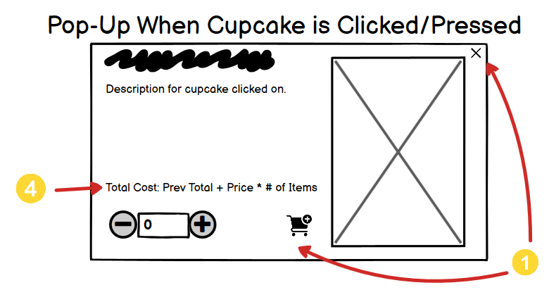

Overview
The goal of this project was to resdesign a simple website with an emphasis on making the resdesigned page responsive for different screen sizes. The workflow consisted of identifying usability problems, generating wireframes and prototypes at different screen sizes to address those issues, and finally creating the actual responsive webpage using HTML and CSS.
The website I chose to examine was the 'Cupcakes' page for Toronto Cupcakes, a bakery based in Toronto, Ontario that specializes in selling various kinds of cupcakes. I chose the webpage because I was drawn to the product, but felt the site was difficult to use and had a lackluster presentation overall.
Part 1: Identifying Usability Problems
Usability Issues:
-
The website design makes shopping a tedious process. Each individual product
has an associated "Add to Cart" button, but multiple items cannot be
added to the cart at the same time without leaving the shopping page. As
shown below, clicking any of the individual "Add to Cart" buttons
makes the user navigate away from the shopping page to the cart page, where
the selected price and quantity is shown only for
that specific item.

Fig 2) This figure shows how anytime you add to cart, it takes you directly to the cart page. This behavior is acceptable for smaller orders, but for orders with multiple types of cupcakes it can be quite annoying to navigate back and forth for each type of item. -
There are also clear formatting issues on various screen sizes. The website
is not responsive, which makes it even more difficult to use for mobile
users.
- The cupcakes in the shop are often misaligned in various ways, which could lead to users think there are missing entries and overall contributes to visual clutter.
- Additionally, there are buttons that take you to top of the page, but they also have inconsistent formatting. On smaller screens, there are an unncessary amount of these icons.
Fig 3) Formatting issue on a smaller screen size, ideally all items are aligned. 
Fig 4) Similar formatting problem. Notice also the repeated "to top" buttons for each cupcake. Fig 5) Formatting issue on a slightly larger screen size. Here there are no missing cupcakes but the rows are awkwardly aligned. -
The visual hierarchy between different elements/sections in the webpage is
also unclear at times due to similarities in the header font style and size.
-
The website consistently displays images for each cupcake, but less
attention is given to displaying the price or availability of each cupcake,
particularly for seasonal/holiday cupcakes. Prices are often shown at the
top of each section, but the pricing of cupcakes can get confusing when
cupcakes belonging to the same section have different prices.
Fig 7) Here are two cupcakes adjacent to each other, so we might expect their prices are the same. If we click on the image however, there is another description which shows us that the two actually have different prices.
Part 2 Visual Redesign:
To start the redesign process I began created lo-fi wireframes targeted towards addressing the 4 main usability issues discussed above. The annotated yellow numbers 1-4 highlight changes to the layout that address the associated usability concerns (above).
Low-Fidelity Wireframing
-
Shopping for Multiple Items
To address the usability issues relating to the shopping experience, I redesigned the previous "add to cart" functionality. Instead of forcing the user to navigate to the shopping cart for each cupcake, I instead make it so that adding an element to cart the cart reflects in the shopping cart (located in the top right corner of each screen).
In order to add an item to cart, the user first clicks on an item that interests them which displays a corresponding pop-up. The user can then select the quantity of that item to add to cart without leaving the screen. Closing the pop-up will allow the user to continue browsing and later checkout all items at once. There would be also be a red-bubble by the shopping cart that would count the number of items in the cart as users make updates.
 -
Layout and Responsiveness
To address responsiveness issues, I highlighted the grid-like layout of store elements at different screen sizes. Items in the store should not be misaligned or appear to be missing at various screen sizes, as mentioned previously.
Additionally, also note that the "back to top" icon is only included at the end of every section rather than being placed next to each cupcake.
-
Visual Hierarchy
To address visual hiearchy, I established clear sections with whitespace between each to demarcate each type of cupcake. This prevents issues mentioned before where similarly styled headers are placed directly next to each other in the document. Each type of cupcake is in its own rectangular section, which clearly separates the different types of cupcakes from each other as well.
-
Pricing Information
I made an effort to make pricing information available to the customer wherever possible. This means pricing information is present for each store item, and additionally when each item is clicked and the associated pop-up is displayed. When elements are added to the cart, the cart total should be shown along with the additional cost of adding the selected item (before the user chooses to do so).
Visual Design Style Guide:
Hi-Fi Prototyping:

Overall the hi-fi prototypes rely primarily on flexboxes for responsiveness at different screen sizes, with the interaction between store sections and store items being the most critical. Looking at the desktop hi-fi, you see how store items are created with a flex-basis: 1 1 0%. This ensures that all of the store-items in the store-container flex-box have consistent sizing. Additionally, the store-container flex-box has a wrapping property and even spacing along each row, so when three items can no longer fit on the page, the container naturally shrinks to holding two or even one items in the case with the phone.
Many of the other changes are primarily quality of life changes, with additional hover states and tricks like using @media queries to show a different number of cupcake logos depending on the screen size.